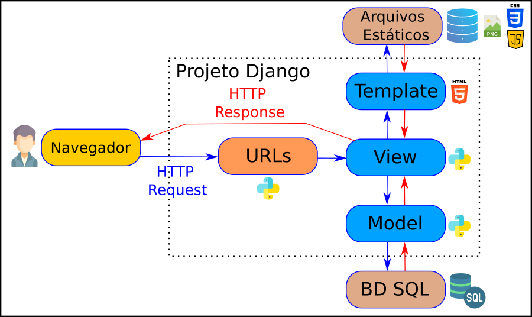

Aula Djando 03 - Sistema para Portal Biblioteca


Aula Djando 03. Projeto utilizando o Django para ser desenvolvido na Aula de GAC116 - Programação Web.
O objetivo desse projeto é criar um sistema para gestão de biblioteca.
Este tutorial foi elaborado baseado no tutorial disponível no curso de django da w3schools e também baseado na documentação oficial do django.
Linguagens Utilizadas
Framework Utilizados
Ferramentas Utilizadas
- Pip - link
- VirtualEnv - link
- Visual Studio Code - link
- SQLite Online - link
- DB Browser for SQLite - link
Arquitetura Web
Arquitetura Geral das Aplicação Web
Fonte: https://blog.grancursosonline.com.br/arquitetura-em-tres-camadas-para-aplicacoes-web/
Arquitetura Django
Arquitetura MVT - Geral

Arquitetura MVT - Requisição

Arquitetura MVT - Detalhes

Objetivo da Aula
A animação abaixo mostra de forma visual o resultado esperado nesta aula.
Comandos utilizados na criação deste projeto
Clonando o Repositório
Inicialmente, clone o repositório da seguinte forma:
Baixando o Repositório
Caso deseje ao invês de clonar o repositório (método acima), baixe o repositório do link clicando em Code e Download ZIP.
Instalação do VirtualEnv
Se necessário, instale o virtualenv (testado na versão 20.24.1):
ou
Verifique a versão instalada do virtualenv (para ter certeza que tudo ocorreu bem):
ou
Abrindo o Visual Studio Code
Abra a IDE Visual Studio Code na pasta aula-django-03.
Dica: Abra o arquivo README.md e clique em Open Preview to the Side para facilitar a construção da aplicação.
Dica: Abra um terminal utilizando a IDE clicando em Terminal e New Terminal. Navegue até a pasta portal_biblioteca.
Criação do Ambiente Virtual
Navegue até a pasta aula-djando-03/portal_biblioteca.
Crie o ambiente virtual para isolar as instalações Python:
ou
Ativei o ambiente virtual para fazer as instalações de forma isolada:
Sistema Operacional: Unix/Mac OS:
Sistema Operacional: Windows
Quando desejar sair do ambiente virtual, basta digitar:
Instalação do Django
Instale o django dentro do ambiente virtual criado (testado na versão 4.2.5):
ou
Verifique a versão instalada do django (para ter certeza que tudo ocorreu bem):
ou
OBS: Caso o terminal não encontre o django-admin, execute o seguinte comando abaixo (utilizado geralmente quando não se utiliza o VirtualEnv no laboratório DCC07):
Executando o Projeto
Antes de executar o projeto, execute o comando para fazer as migrações:
Em seguida, execute comando abaixo para fazer a cópia dos arquivos estáticos:
Inicie a execução do projeto django criado:
OBS: Por padrão, o servidor de desenvolvimento escuta na porta 8000, mas você pode especificar uma porta diferente como argumento opcional, por exemplo, python3 manage.py runserver 8081.
Acesse através do navegdor web a página http://127.0.0.1:8000/.
A aula anterior avançou até aqui.
Criando nosso Primeiro Modelo
Até esse momento fizemos a nossa aplicação web com interface, com URLs e algum processamento, mas não trabalhamos com Banco de Dados. Os dados estavam inseridos diretamente no código.
Iremos agora criar o nosso modelo para representar Livros e TCCs no Banco de Dados SQLite disponível no Django. No Django, os dados são criados em objetos, chamados Modelos, e na verdade são tabelas em um banco de dados.
Primeiramente, iremos criar uma classe chamada Livro. Para isso abra o arquivo models.py na pasta biblioteca e digite o seguinte conteúdo:
from django.db import models
class Livro(models.Model):
nome = models.CharField(max_length=255)
autor = models.CharField(max_length=255)
ano = models.IntegerField()
O código acima irá criar uma Tabela chamada Livro no BD SQLite. Os campos nome e autor são campos de texto e estão configurados para ter no máximo 255 caracteres. O campo ano é um campo numérico inteiro.
OBS: Quando criamos o projeto Django, obtivemos um banco de dados SQLite vazio. Ele estava na raiz da pasta portal_biblioteca e possui o nome de arquivo db.sqlite3. Por padrão, todos os modelos criados no projeto Django serão criados como tabelas neste banco de dados.
Em seguida, execute o código abaixo para que seja criado a tabela Livro no banco de dados de fato:
OBS: Após definir os modelos, você cria migrações com este comando. Isso cria arquivos de migração que descrevem como o banco de dados deve ser modificado para refletir as alterações nos modelos.
O que resultará nesta saída:
O Django cria um arquivo descrevendo as alterações e armazena o arquivo na pasta /biblioteca/migrations/ com nome 0001_initial.py. Abra esse arquivo para analisar o conteúdo. Observe que o Django insere um campo id para suas tabelas, que é um número auto incrementado.
A tabela ainda não foi criada, você terá que executar mais um comando, então o Django criará e executará uma instrução SQL, baseada no conteúdo do novo arquivo da pasta /biblioteca/migrations/.
Execute o comando de migração:
OBS: Este comando aplica as migrações, ou seja, atualiza o esquema do banco de dados de acordo com as mudanças nos modelos.
O que resultará nesta saída:
Operations to perform:
Apply all migrations: admin, auth, biblioteca, contenttypes, sessions
Running migrations:
Applying biblioteca.0001_initial... OK
Usaremos o interpretador Python (Python Shell) para adicionar alguns livros a tabela criada no BD. Para abrir um shell Python, digite este comando:
O que resultará nesta saída:
Python 3.10.12 (main, Jun 11 2023, 05:26:28) [GCC 11.4.0] on linux
Type "help", "copyright", "credits" or "license" for more information.
(InteractiveConsole)
>>>
Na parte inferior, após os três, >>> escreva o seguinte:
Pressione [enter] e escreva o código abaixo para ver a tabela Livro vazia:
Isso deve fornecer um objeto QuerySet vazio, como este:
Um QuerySet é uma coleção de dados de um banco de dados.
Adicione um registro à tabela, executando estas duas linhas:
Execute este comando para ver se a tabela Livro possui um membro:
O que resultará nesta saída:
Para sair do ambiente shell digite:
Você acaba de aprender como criar uma tabela no BD e como inserir informações nessa tabela utilizando o interpretador do Python. Existe outras formas de fazer a inserção de informações nessa tabela e veremos isso adiante.
Ambiente Administrativo do Django
O Django Admin é uma ferramenta ótima do Django, na verdade é uma interface de usuário CRUD (Criar, Ler, Atualizar, Excluir) para todos os seus modelos!
Para entrar na interface do usuário administrativo, inicie o servidor com este comando:
Na janela do navegador, digite na barra de endereço 127.0.0.1:8000/admin/
A razão pela qual esta URL vai para a página de login do administrador do Django pode ser encontrada no arquivo urls.py do seu projeto:
from django.contrib import admin
from django.urls import include, path
urlpatterns = [
path('', include('biblioteca.urls')),
path('admin/', admin.site.urls), # definição da rota do ambiente adminstrativo
]
Explicação: A lista urlpatterns[] recebe solicitações na rota admin/ e as envia para admin.site.urls, que faz parte de um aplicativo integrado que vem com o Django e contém muitas funcionalidades e interfaces de usuário, sendo uma delas a interface de usuário de login.
Criando um Usuário no Django
Para poder fazer login no ambiente administrativo do Django, precisamos criar um usuário. Isso é feito digitando este comando:
O que dará um prompt como esse:
Username: admin
Email address:
Password:
Password (again):
The password is too similar to the username.
This password is too short. It must contain at least 8 characters.
This password is too common.
Bypass password validation and create user anyway? [y/N]: y
OBS: Aqui você deve inserir: nome de usuário, endereço de e-mail (você pode simplesmente deixar em branco ou escolher um endereço de e-mail falso) e senha. Em meu caso coloquei usuário admin email em branco e senha admin.
Minha senha não atendeu aos critérios, mas este é um ambiente de teste, e opto por criar usuário mesmo assim, digitando y gerando assim a saída:
Agora reinicie o servidor:
Na janela do navegador, digite na barra de endereço 127.0.0.1:8000/admin/.
Preencha o formulário com o nome de usuário e senha corretos (admin e admin).
Na interface aberta você pode criar, ler, atualizar e excluir grupos e usuários, mas onde está o modelo de Livro?
O modelo Livro está faltando, como deveria estar. Você tem que informar ao Django quais modelos devem estar visíveis na interface administrativa.
Para incluir o modelo Livro na interface administrativa, temos que dizer ao Django que este modelo deve estar visível na interface administrativa.
Isso é feito em um arquivo chamado admin.py, e está localizado na pasta do seu aplicativo, que no nosso caso é a pasta biblioteca.
Abra-o, o mesmo deve estar assim:
Insira algumas linhas aqui para tornar o modelo Livro visível na página de administração:
Agora volte para o navegador e atualize a barra de endereço 127.0.0.1:8000/admin/
Clique em Livros e veja o registro de livros que inserimos anteriormente neste tutorial:
Na lista de Livros, vemos "Livro object (1)", "Livro membro (2)" etc., que podem não ser os dados que você deseja que sejam exibidos na lista. Seria melhor exibir "nome" e "autor".
Para mudar isso para um formato mais fácil de ler, temos duas opções:
- Alterar a função de representação de string
__str__()do modelo de Livro. - Definir a propriedade
list_detailsdo modelo de Livro.
Para alterar utilizando a primeira forma, devemos alterar a função de representação de string __str__() do modelo de Livro. Para isso faça o seguinte no arquivo models.py dentro da pasta biblioteca:
from django.db import models
class Livro(models.Model):
nome = models.CharField(max_length=255)
autor = models.CharField(max_length=255)
ano = models.IntegerField()
def __str__(self): #definição de função adionada
return f"{self.nome} - {self.autor}"
Agora volte para o navegador e atualize a barra de endereço 127.0.0.1:8000/admin/.
Para alterar utilizando a segunda forma (RECOMENDADA), devemos definir a propriedade list_display do arquivo admin.py. Primeiro crie uma classe LivroAdmin() e especifique a tupla list_display, assim:
from django.contrib import admin
from .models import Livro
class LivroAdmin(admin.ModelAdmin):
list_display = ("nome", "autor", "ano")
admin.site.register(Livro, LivroAdmin)
OBS: Lembre-se de adicionar LivroAdmin como um argumento no arquivo, como em: admin.site.register(Livro, LivroAdmin).
Agora volte para o navegador e atualize a barra de endereço 127.0.0.1:8000/admin/.
Adicionando novos Livros
Agora podemos criar, atualizar e excluir livros em nosso banco de dados.
Iremos adicionar mais dois livros, clique no botão "ADD LIVRO" no canto superior direito:
Você receberá um formulário vazio onde poderá preencher os campos do livro. Utilize as informações a seguir para preenchimento:
{
"nome": "1984",
"autor": "George Orwell",
"ano": 1949
},
{
"nome": "Dom Quixote",
"autor": "Miguel de Cervantes",
"ano": 1605
}
Preencha os campos e clique em SAVE:
Carregando a Interface Livro com Dados do BD
Até aqui, vimos como trabalhar com o Banco de Dados, mas a interface da nossa aplicação (livro) ainda não está fazendo a leitura dos dados do BD.
Agora, iremos atualizar a interface para puxar/pegar os dados do BD.
Assim, é necessário atualizar o código views.py da pasta biblioteca. Devemos remover os dados que estavam inseridos estaticamente nesse arquivo.
...
from .models import Livro # adicione esta importação
...
def livros(request): # atualize esta função
livros = Livro.objects.all().values()
template = loader.get_template('livros.html')
context = {
'livros': livros,
}
return HttpResponse(template.render(context, request))
Agora volte para o navegador e atualize a barra de endereço 127.0.0.1:8000/livros.
Repare que os livros listados são somente os livros cadastrados no Banco de Dados.
Configuração do Projeto Django em Português
Repare que todo o ambiente administrativo do django está em Inglês, vamos agora, alterar isso para português.
Assim, no arquivo settings.py (na pasta portal_biblioteca), faça a seguinte alteração:
Agora volte para o navegador e atualize a barra de endereço 127.0.0.1:8000/admin/.
Carregando a Interface TCC com Dados do BD
Até aqui criamos apenas uma Tabela no BD que é Livro. Agora iremos criar uma Tabela TCC no Modelo do BD.
Primeiramente, iremos criar uma classe chamada TCC. Para isso, abra o arquivo models.py na pasta biblioteca e digite o seguinte conteúdo:
from django.db import models
...
class TCC(models.Model): # classe adiconada
titulo = models.CharField(max_length=255)
autor = models.CharField(max_length=255)
orientador = models.CharField(max_length=255)
ano = models.IntegerField()
def __str__(self):
return f"{self.titulo} - {self.autor}"
O código acima irá criar uma Tabela chamada TCC no BD SQLite.
Em seguida, execute o código abaixo para que seja criado a tabela TCC no banco de dados de fato:
O que resultará nesta saída:
A tabela ainda não foi criada, execute o comando de migração para que a tabela seja de fato criada:
O que resultará nesta saída:
Operations to perform:
Apply all migrations: admin, auth, biblioteca, contenttypes, sessions
Running migrations:
Applying biblioteca.0002_tcc... OK
Agora, iremos informar ao Django quais modelos devem estar visíveis na interface administrativa. Para incluir o modelo TCC na interface administrativa, temos que dizer ao Django que este modelo deve estar visível na interface administrativa.
Isso é feito em um arquivo chamado admin.py, e está localizado na pasta do seu aplicativo, que no nosso caso é a pasta biblioteca. Digite o seguinte código:
from django.contrib import admin
from .models import Livro
from .models import TCC #linha adicionada
class LivroAdmin(admin.ModelAdmin):
list_display = ("nome", "autor", "ano")
class TCCAdmin(admin.ModelAdmin): # função adicionada
list_display = ("titulo", "autor", "orientador", "ano")
admin.site.register(Livro, LivroAdmin)
admin.site.register(TCC, TCCAdmin) # linha adicionada
Agora, reinicie o servidor:
Agora, volte para o navegador e atualize a barra de endereço 127.0.0.1:8000/admin/.
Agora, podemos criar, atualizar e excluir TCCs em nosso banco de dados.
Iremos adicionar mais três TCCs, clique no botão "ADICIONAR TCC" no canto superior direito:
Você receberá um formulário vazio onde poderá preencher os campos do TCC. Utilize as informações a seguir para preenchimento:
{
"titulo": "Sistemas de Recomendação Personalizados",
"autor": "Maria Silva",
"orientador": "Prof. João Santos",
"ano": 2021
},
{
"titulo": "Segurança de Redes em Ambientes Corporativos",
"autor": "Pedro Oliveira",
"orientador": "Profa. Ana Rodrigues",
"ano": 2020
},
{
"titulo": "Inteligência Artificial Aplicada à Análise de Dados",
"autor": "Luana Costa",
"orientador": "Prof. André Martins",
"ano": 2019
}
Preencha os campos e clique em SAVE:
Agora, iremos atualizar a interface do TCC para puxar/pegar os dados do BD.
Assim, é necessário atualizar o código views.py da pasta biblioteca.
...
from .models import TCC # adicione esta importação
...
def tccs(request): # atualize esta função
tccs = TCC.objects.all().values()
template = loader.get_template('tccs.html')
context = {
'tccs': tccs,
}
return HttpResponse(template.render(context, request))
Agora volte para o navegador e atualize a barra de endereço 127.0.0.1:8000/tccs.
Repare que os TCCs listados são somente os TCCs cadastrados no Banco de Dados.
Ainda no código views.py da pasta biblioteca atualize a função tcc_detalhes para que a mesma pegue os dados também do banco de dados baseado no id.
...
def tcc_detalhes(request, id):
tcc = TCC.objects.get(id=id)
template = loader.get_template('tcc_detalhes.html')
context = {
'tcc': tcc,
}
return HttpResponse(template.render(context, request))
Para mais informações, consulte a documentação oficial do django.
Adicionando Controle de Usuários no Django
Esta parte do tutorial foi baseada na documentação oficial django e também na videoaula.
O Django possui já prontos diversos recursos para trabalhar com autenticação de usuários e controle de nível de acesso.
Agora, iremos adicionar em nosso projeto um sistema de gestão de usuários. Para criarmos na sequência as telas de login e cadastro na plataforma.
Para isso, iremos criar uma outra aplicação/aplicativo web dentro do nosso projeto. Assim, digite o seguinte conteúdo.
Agora, atualize a lista INSTALLED_APPS em settings.py na pasta portal_biblioteca:
...
INSTALLED_APPS = [
'django.contrib.admin',
'django.contrib.auth',
'django.contrib.contenttypes',
'django.contrib.sessions',
'django.contrib.messages',
'django.contrib.staticfiles',
'biblioteca',
'usuarios', #adicone seu app aqui
]
...
Agora, crie na pasta usuarios um arquivo chamado urls.py com o seguinte conteúdo:
from django.urls import path
from . import views
urlpatterns = [
path('login', views.login, name='login'),
path('cadastro', views.cadastro, name='cadastro'),
]
Agora, precisamos informar a nossa aplicação principal da existência dessas novas URLs. Assim, edite o código urls.py da pasta porta_biblioteca da seguinte forma:
from django.contrib import admin
from django.urls import include, path
urlpatterns = [
path('', include('biblioteca.urls')),
path('auth/', include('usuarios.urls')), #adicione essa linha aqui
path('admin/', admin.site.urls),
]
Agora, precisamos definir as views do nosso sistema de login e cadastro. Assim, digite o código abaixo no arquivo views.py na pasta usuarios:
from django.http import HttpResponse
from django.shortcuts import render
def login(request):
return render(request, 'login.html')
def cadastro(request):
return render(request, 'cadastro.html')
Agora, iremos criar uma pasta chamada templates dentro da aplicação usuarios. Nesta pasta, iremos criar um arquivo chamado login.html com o seguinte conteúdo:
Ainda nesta pasta, iremos criar também um arquivo chamado cadastro.html com o seguinte conteúdo:
Agora, reinicie o servidor:
Agora, volte para o navegador e atualize a barra de endereço 127.0.0.1:8000/. Navegue pelas abas Login e Cadastre-se.
Melhorando a Tela de Cadastro
Agora, iremos definir melhor a tela de Cadastro.
No arquivo cadastro.html digite o seguinte:
{% extends "base.html" %}
{% block titulo %}
Portal Biblioteca - Cadastro
{% endblock %}
{% block conteudo %}
<div class="mycard">
<h1>Cadastre-se</h1>
<center>
<form action="{% url 'cadastro' %}" method="POST">
{% csrf_token %}
Usuário: <input type="text" placeholder="Usuário ..." name="usuario">
<br>
<br>
E-mail: <input type="email" placeholder="E-mail ..." name="email">
<br>
<br>
Senha: <input type="password" placeholder="Senha ..." name="senha">
<br>
<br>
<input type="submit" value="Cadastrar">
</form>
</center>
</div>
{% endblock %}
Explicação: O código acima cria um formulário com os seguintes campos: usuário, email, senha e botão cadastrar. Neste formulário, quando clicado no botão cadastrar enviará uma ação via método POST para a url de nome cadastro (nome definida no arquivo url.py). A tag csrf_token é necessária para fazer uma verificação de segurança.
Explicação: O CSRF Token, que significa "Cross-Site Request Forgery Token" (Token de Proteção contra Solicitação Falsificada entre Sites), é uma medida de segurança utilizada em aplicações da web para proteger contra ataques CSRF (Cross-Site Request Forgery), também conhecidos como ataques de falsificação de solicitação entre sites. Um ataque CSRF ocorre quando um invasor engana um usuário autenticado a executar ações indesejadas em um site sem o conhecimento ou consentimento do usuário. Isso é feito explorando o fato de que os navegadores da web geralmente incluem automaticamente cookies de sessão em todas as solicitações para um domínio, incluindo solicitações maliciosas.
Em seguida, atualize o código do método cadastro na view.py.
...
def cadastro(request): # atualize essa função
if request.method == "GET":
return render(request, 'cadastro.html')
else: #senão será via método "POST":
usuario = request.POST.get('usuario')
email = request.POST.get('email')
senha = request.POST.get('senha')
return HttpResponse(usuario)
Em seguida, acesse o servidor e efetue um cadastro e analise o resultado na tela.
Até aqui, não efetuamos de fato um cadastro, apenas exibimos na tela a informação do usuário.
Agora, iremos inserir as informações cadastradas no BD.
Assim, atualize o código do método cadastro na view.py.
from django.contrib.auth.models import User
...
def cadastro(request):
if request.method == "GET":
return render(request, 'cadastro.html')
else: #senão será via método "POST":
usuario = request.POST.get('usuario')
email = request.POST.get('email')
senha = request.POST.get('senha')
user = User.objects.filter(username=usuario).first()
if user:
return HttpResponse('Já existe um usuário com esse username')
# se não existir usuário com esse nome cria e salva o mesmo.
user = User.objects.create_user(username=usuario, email=email, password=senha)
user.save()
return HttpResponse('Usuário cadastrado com sucesso')
Em seguida, acesse o servidor e efetue um cadastro e analise o resultado na tela e também no menu administrativo do Django. Efetue também cadastro de dois usuários com mesmo nome e analise o resultado.
OBS: O Django não armazena senhas brutas (texto não criptografado) no modelo de usuário. Ele armazena apenas um hash da senha.
Para mais detalhes sobre a classe User consulte a documentação oficial.
Melhorando a Tela de Login
Agora, iremos definir melhor a tela de Login.
No arquivo login.html digite o seguinte:
{% extends "base.html" %}
{% block titulo %}
Portal Biblioteca - Login
{% endblock %}
{% block conteudo %}
<div class="mycard">
<h1>Login</h1>
<center>
<form action="{% url 'login' %}" method="POST">
{% csrf_token %}
Usuário: <input type="text" placeholder="Usuário ..." name="usuario">
<br>
<br>
Senha: <input type="password" placeholder="Senha ..." name="senha">
<br>
<br>
<input type="submit" value="Logar">
</form>
</center>
</div>
{% endblock %}
Em seguida, atualize o código do método login na view.py.
from django.contrib.auth import authenticate
...
def login(request): #atualize essa função
if request.method == "GET":
return render(request, 'login.html')
else:
usuario = request.POST.get('usuario')
senha = request.POST.get('senha')
user = authenticate(username=usuario, password=senha)
if user:
return HttpResponse('Autenticado')
else:
return HttpResponse('Usuario ou Senha inválidos')
Agora, acesse o servidor e efetue um login e analise o resultado na tela. Tente colocar um usuário válido e um usuário inválido.
Em seguida, atualize o código do método cadastro na view.py.
from django.contrib.auth import login as login_django #importe também o login
...
def login(request):
if request.method == "GET":
return render(request, 'login.html')
else:
usuario = request.POST.get('usuario')
senha = request.POST.get('senha')
user = authenticate(username=usuario, password=senha)
if user:
login_django(request, user) # linha adicionada
return HttpResponse('Autenticado')
else:
return HttpResponse('Usuario ou Senha inválidos')
Agora, acesse o servidor e efetue um login e analise o resultado na tela. Tente colocar um usuário válido e um usuário inválido. Neste ponto ainda não dá para ver muita diferença entre os dois útlimos passos.
Explicação: As principais diferenças entre "authenticate" e "login" do django são destacadas a seguir:
authenticate: * O método "authenticate" é uma função fornecida pelo Django que é usada para verificar as credenciais de um usuário em um sistema de autenticação. * Ele recebe as informações de login do usuário, como nome de usuário e senha, e verifica se essas informações correspondem a um usuário registrado no sistema. * Se as credenciais estiverem corretas, o método "authenticate" retornará um objeto de usuário válido que representa o usuário autenticado. Caso contrário, retornará "None".
login: * O método "login" refere-se ao processo de estabelecer uma sessão de usuário autenticada em um aplicativo da web após a autenticação bem-sucedida. * O Django fornece uma função chamada "login" que permite que você associe um objeto de usuário autenticado a uma sessão. Isso é importante para manter o estado de autenticação do usuário durante a sessão. * A função "login" normalmente é usada após o usuário ser autenticado com sucesso usando o "authenticate".
Dashboard Disponível Apenas para Usuários Logados
Agora, iremos permitir que a visualização dos dashboards esteja disponível apenas se o usuário estiver logado na plataforma.
Dessa maneira, atualize o código da função dashboard em view.py da pasta biblioteca para o seguinte.
...
def dashboard(request):
if request.user.is_authenticated:
template = loader.get_template('dashboard.html')
return HttpResponse(template.render())
return HttpResponse("Você precisa estar logado!")
Em seguida, abra uma guia anônima do navegador e tente acessar a tela de dashboard. Na sequência, faça login na plataforma e então tente acessar o dashboard.
Uma outra forma de fazer a mesma operação é utilizando o decorador login_required. Atualize o seu código da função dashborad em view.py da pasta biblioteca para o seguinte.
from django.contrib.auth.decorators import login_required
...
@login_required(login_url="/auth/login")
def dashboard(request):
template = loader.get_template('dashboard.html')
return HttpResponse(template.render())
Em seguida, abra uma guia anônima do navegador e tente acessar a tela de dashboard. Perceba que portal redireciona para a tela de login, isso ocorre, pois colocamos isso no parâmetro login_url. Na sequência, faça login na plataforma e então tente acessar o dashboard.
Adicionando Botão de Logout no Sistema
Agora, iremos adicionar no nosso sistema um botão para efetuar o logout.
Para isso, vá no arquivo base.html na pasta templates na pasta biblioteca. E edite o HTML adicionando as linhas destacadas.
Em seguida, vá no arquivo urls.py da pasta usuarios e adicione a seguinte rota.
Em seguida, vá no arquivo views.py da pasta ùsuarios e adicione o seguinte conteúdo:
from django.contrib.auth import logout as logout_django
...
def logout(request):
logout_django(request)
return HttpResponse('Usuario deslogado do sistema!')
Explicação: Quando você chama logout() do django ou logout_django() neste caso, os dados da sessão da solicitação atual são completamente limpos. Todos os dados existentes são removidos. Isso evita que outra pessoa use o mesmo navegador para fazer login e ter acesso aos dados da sessão do usuário anterior.
Em seguida, acesse o sistema, faça logout, tente acessar a página de dashboard, faça login, tente acessar a página de dashboard. Analise as mensagens impressas.
Adicionando Bootstrap no Sistema
Neste passo, iremos melhorar a aparência do nosso sistema utilizando o framework Bootstrap. Caso tenha dúvidas em como funciona o Bootstrap consulte a documentação oficial ou o curso da w3schools.
Para incorporar o bootstrap no nosso sistema primeiro, atualize o arquivo base.html da pasta biblioteca e subpasta templates conforme código abaixo:
{% load static %}
<!DOCTYPE html>
<html>
<head>
<link rel="stylesheet" href="{% static 'mystyles.css' %}">
<title>{% block titulo %}{% endblock %}</title>
<link href="https://cdn.jsdelivr.net/npm/bootstrap@5.3.2/dist/css/bootstrap.min.css" rel="stylesheet">
<script src="https://cdn.jsdelivr.net/npm/bootstrap@5.3.2/dist/js/bootstrap.bundle.min.js"></script>
</head>
<body>
<div class="topnav">
<a href="/">PRINCIPAL</a> |
<a href="/livros">LIVROS</a> |
<a href="/tccs">TCCs</a> |
<a href="/dashboard">DASHBOARD</a> |
<a href="/auth/login">LOGIN</a> |
<a href="/auth/cadastro">CADASTRE-SE</a> |
<a href="/auth/logout">LOGOUT</a>
</div>
{% block conteudo %}
{% endblock %}
</body>
</html>
Em seguida, atualize o arquivo login.html da pasta usuario e subpasta templates.
...
<form action="{% url 'login' %}" method="POST">
{% csrf_token %}
<div class="input-group">
<span class="input-group-text">Usuário: </span>
<input type="text" class="form-control" placeholder="Usuário ..." name="usuario">
</div>
<br>
<div class="input-group">
<span class="input-group-text">Senha: </span>
<input type="password" class="form-control" placeholder="Senha ..." name="senha">
</div>
<br>
<input type="submit" value="Logar" class="btn btn-primary">
</form>
...
Em seguida, atualize o arquivo cadastro.html da pasta usuario e subpasta templates.
...
<form action="{% url 'cadastro' %}" method="POST">
{% csrf_token %}
<div class="input-group">
<span class="input-group-text">Usuário: </span>
<input type="text" class="form-control" placeholder="Usuário ..." name="usuario">
</div>
<br>
<div class="input-group">
<span class="input-group-text">E-mail: </span>
<input type="email" class="form-control" placeholder="E-mail ..." name="email">
</div>
<br>
<div class="input-group">
<span class="input-group-text">Senha: </span>
<input type="password" class="form-control" placeholder="Senha ..." name="senha">
</div>
<br>
<input type="submit" value="Cadastrar" class="btn btn-primary">
</form>
...
Em seguida, acesse a aplicação no navegador e análise a nova interface do sistema nas telas de login e cadastro.
Adicionando no Dashboard Informação do Usuário Logado
Nessa etapa desejamos adicionar informações do usuário logado na tela do dashboard.
Primeiramente, iremos atualizar o método dashboard no arquivo views.py da pasta biblioteca.
@login_required(login_url="/auth/login")
def dashboard(request):
template = loader.get_template('dashboard.html')
# Você pode acessar o usuário logado através de request.user
user = request.user
# Agora você pode fazer qualquer coisa com o objeto 'user', como acessar seus campos, por exemplo:
username = user.username
email = user.email
context = {
'usuario': username,
'email': email,
}
return HttpResponse(template.render(context, request))
Em seguida, é necessário atualizar também o arquivo dashboard.html da biblioteca e subpasta templates.
{% extends "base.html" %}
{% load static %}
{% block titulo %}
Portal Biblioteca - Dashboard
{% endblock %}
{% block conteudo %}
<!-- Início do bloco de código adicionado -->
<center>
<br>
<div class="card" style="width:240px">
<img class="card-img-top" src="{% static 'img_avatar.png' %}" alt="Imagem do card">
<div class="card-body">
<h4 class="card-title"> {{ usuario }} </h4>
<p class="card-text">Email: {{ email }} </p>
</div>
</div>
</center>
<!-- Fim do bloco de código adicionado -->
<div class="mycard">
<h1>Dashboard</h1>
<div>
<canvas id="graficoNumVolumes"></canvas>
</div>
<br>
<br>
<div>
<canvas id="graficoPizza"></canvas>
</div>
</div>
<script src="https://cdn.jsdelivr.net/npm/chart.js"></script>
<script src="{% static 'myscripts.js' %}"></script>
{% endblock %}
Em seguida, é necessário copiar o arquivo img_avatar.png da pasta docs para a pasta staticfiles.
Em seguida, execute o seguinte comando abaixo:
Em seguida, reinicie o servidor:
Analise a página de dashboard com diferentes usários logados no sistema.
Algumas Informações Adicionais
Caso queira ver o que foi feito no BD, basta digitar o comando abaixo com o número da migração:
Obs: no comando acima biblioteca representa o nome da nossa aplicação web e o número 0001 é o número da migração.
A saída desse comando é algo parecido com:
BEGIN;
--
-- Create model Livro
--
CREATE TABLE "biblioteca_livro" ("id" integer NOT NULL PRIMARY KEY AUTOINCREMENT, "nome" varchar(255) NOT NULL, "autor" varchar(255) NOT NULL, "ano" integer NOT NULL);
COMMIT;
Para vermos com detalhes o conteúdo do BD podemos utilizar a ferramenta DB Browser for SQLite. Assim, basta abrir o arquivo do BD chamado db.sqlite3 que está na raiz do projeto.